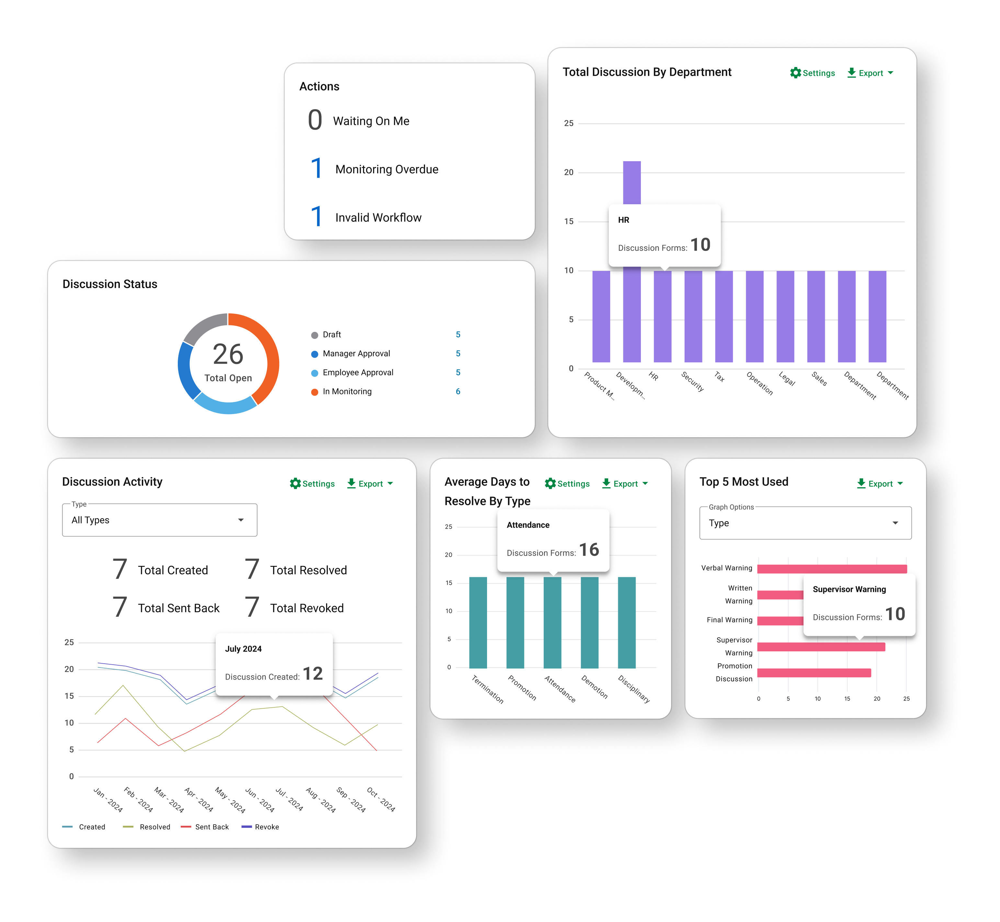
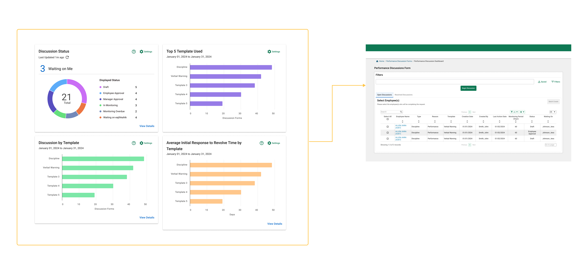
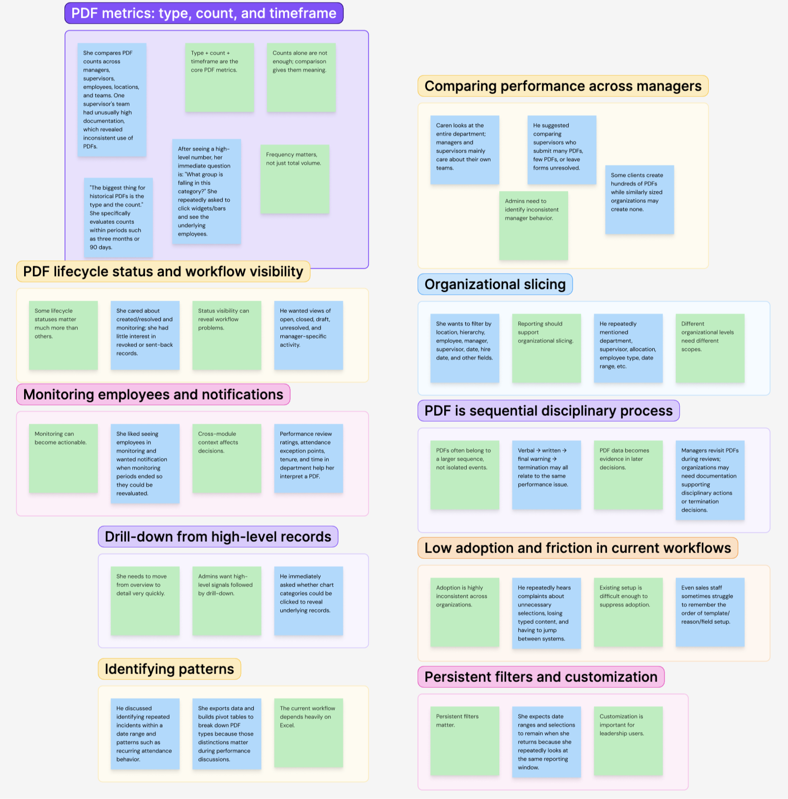
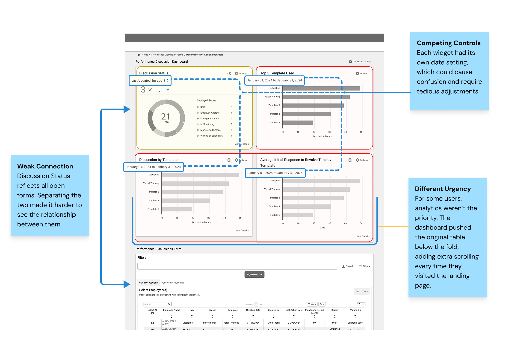
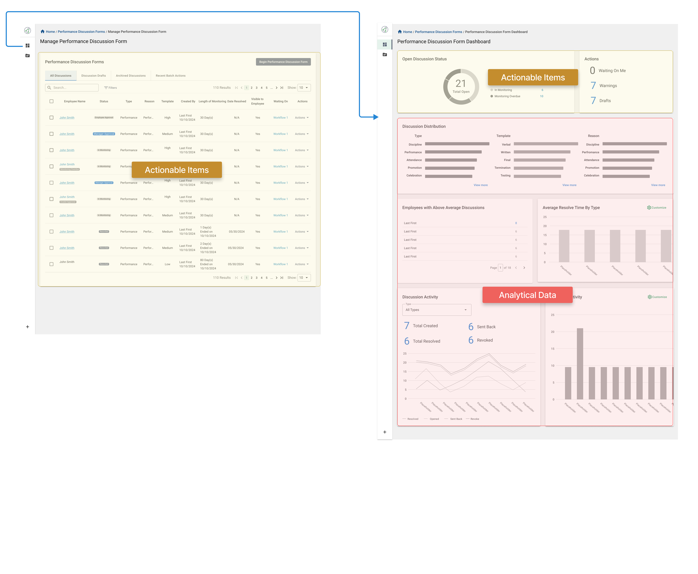
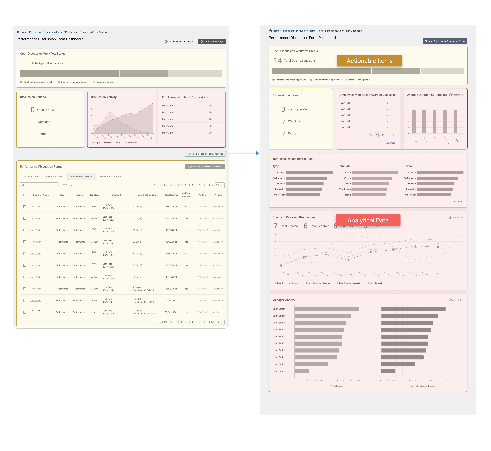
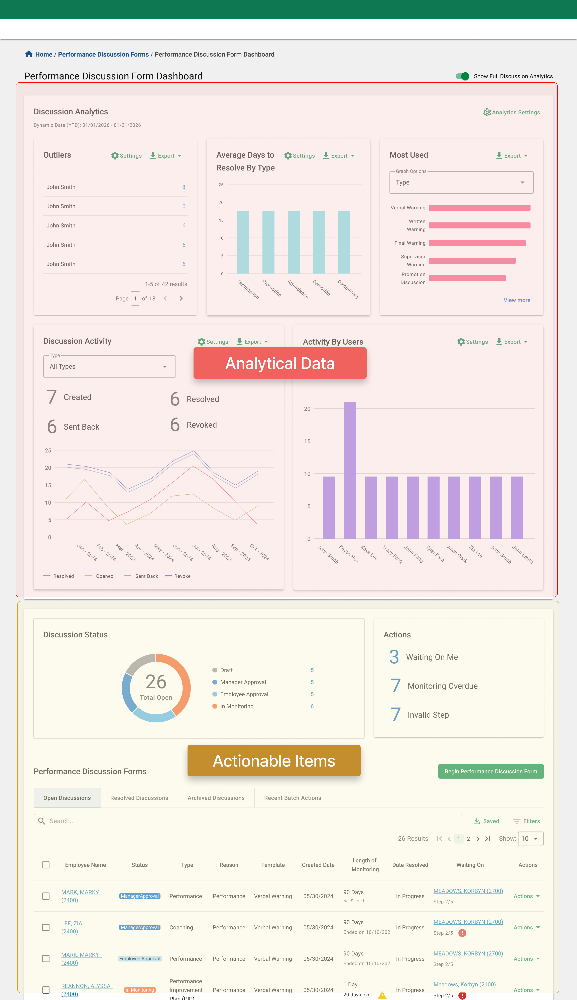
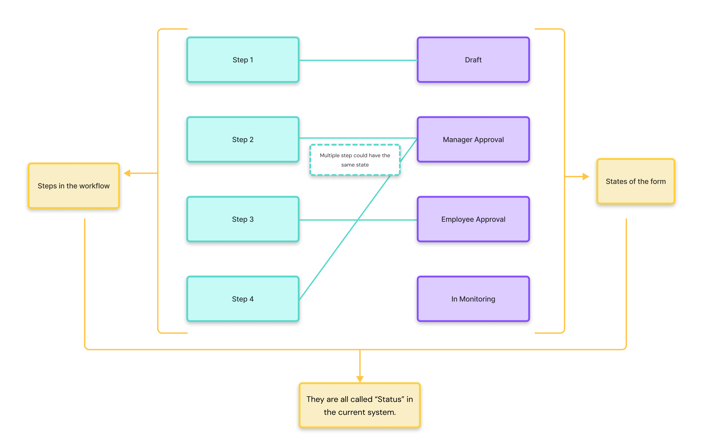
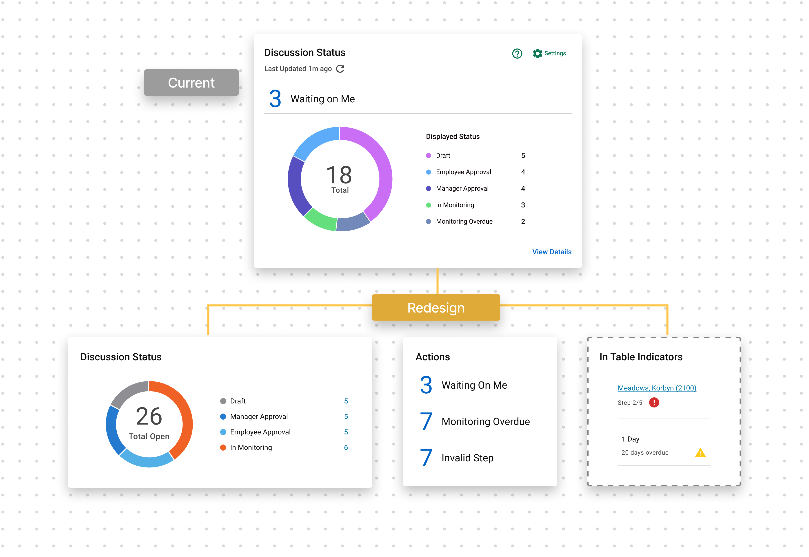

Status
Where is this discussion in its lifecycle?
The lifecycle
- Draft
- Employee Approval
- Manager Approval
- In Monitoring
Redesigned a legacy data table into a dashboard that connects actionable work with meaningful analytics.

The Performance Discussion Form helps managers document recognition, coaching, warnings, and improvement plans. Its legacy landing page treated active work and historical records as one flat table, making urgent items difficult to distinguish from long-term patterns.
Challenge
The PDF module was built on a framework nearly two decades old. Its landing page was essentially a flat, text-heavy table. There was little hierarchy, limited status logic, and no clear distinction between records that required attention and records that were simply part of the historical record.
Outcome
Redesign the landing page into a clearer, more structured dashboard that separates actionable work from historical insights, strengthens status visibility, and helps users quickly understand what matters now versus what matters over time.
My Role
I was the sole designer on this project, partnering closely with the PM on scope, priorities, and product requirements. I led the research synthesis, information architecture, interaction model, data visualization, and visual design.
Timeline
Q4 2024 Phase 1
Q2 2025 Phase 2
Team
Lead designer and product manager
Phase One
Phase One started with a focused brief: design four dashboard widgets above the existing PDF data table. To meet the timeline, I designed the experience within the legacy framework and handed it off for development. As the work progressed, I identified opportunities to take a deeper look at the data and user needs. I documented those findings, along with a potential React migration, to help guide the next iteration.

Key risks
1. Disconnected experience: The dashboard analytics and underlying records did not yet feel like parts of the same workflow.
2. Overlapping widget purposes: Some widgets presented similar information without offering a clearly distinct purpose.
3. Unclear status model: Status labels combined lifecycle progress, required actions, and workflow issues, making them difficult to interpret.
Phase Two: Same data. Different jobs.
The project returned to design as part of a system-wide front-end framework update. The new ticket added only one line to the original request: “Update design to React.” I saw this as an opportunity to revisit some of the risks we had identified in Phase One and take a more thoughtful approach to the redesign.
I proposed a structured project plan and a more thorough design timeline. But before redesigning anything, we started by validating what we had learned from Phase One.
User Interviews
With the resources available, I conducted interviews and walked participants through the Phase One dashboard to gather feedback and understand how users actually use the Performance Discussion Form.
Recurring Topics

Participants welcomed the visual modernization, but the widgets did not consistently support their work. I initially assumed roles differed mainly by how much data they needed. Research showed the more important distinction was what they were trying to accomplish with it.
Job: Act
“What needs my immediate attention?”
Current behaviorSearches records
Job: Understand
“What patterns should I investigate?”
Current behaviorExports & analyzes
Once I understood the two roles, another problem became clear:
Live workflow data and historical analytics were competing for the same space.

Instead of continuing to add more widgets into the same container, I reorganized the page around intent.
Actionable Information
Current discussions stay directly connected to the status table and answer questions about what needs attention now.
Selecting a summary value filters the records below, allowing users to move directly from signal → action.
Historical Analytics
Trend-based reporting lives in a separate analytics card with one shared time range.
Because this information is valuable but less urgent, the card can collapse so current work remains visible by default.

Iteration 1
This draft separated the analytics dashboard from the data table through a side navigation entry point, giving each more space and independence. Users could land directly on the dashboard, then access actionable items and the data table through the status widget when needed.
Feedback
Stakeholders liked the new widget arrangement, but the sidebar navigation didn’t align with the overall product direction.

Iteration 2
I moved the entry point for the full analytics view to a button on the landing page. The landing page itself provided a quick view of both analytics and actionable widgets.
Feedback
Stakeholders liked having a direct entry point to analytics on the screen, but the module wasn’t ready to support the development of an additional page. The two types of data also still felt like they were competing for attention when placed in the same space.
Final Solution
The final direction keeps all widgets on one page while allowing users to expand or collapse information based on their immediate needs. The dashboard can adapt to different priorities without fragmenting the experience across multiple pages.
It draws a clearer line between actionable and analytical data, making both easier to understand.
The status widget connects directly to the data table, so users can filter actionable items and move from a summary signal to the records behind it.

One of the biggest challenges in this project was deciding what story the data should tell.
Through interviews with different types of users and conversations with stakeholders, I found that the first design contained redundant information. Several widgets were essentially answering the same question in different ways.
For the new direction, I wanted each widget to have a clear purpose and support a specific user need. I reviewed every widget from the original dashboard and refined the titles and settings of the remaining widgets to make their purpose clearer.
The legacy system had another structural problem. Its status field tried to communicate too much. Lifecycle stages, overdue items, workflow problems, and action requirements all appeared as versions of “status.”

On closer review, those were actually two different concepts. So I separated them.
Status
The lifecycle
Action Warning
Items requiring attention
These items are surfaced separately rather than treated as lifecycle states.
This approach reduces status complexity and shortens labels by unifying them under clearer definitions while separately calling out items that need immediate attention.
The same logic carries into the data table, drawing attention to rows with specific warnings or errors and giving users more confidence when managing a large volume of forms.

Because approval order can vary depending on configuration, the label alone still cannot communicate progress reliably. So I paired each approval state with a step counter:
Manager Approval · Step 2 of 4
A dashboard organized around role, urgency, and meaning.
The redesigned experience now:
The status and category model can also be reused in other areas of the platform with similar action-versus-history patterns.
Current Status
The redesigned dashboard is now the top-priority initiative for the next PDF module development cycle.
The redesigned direction was reviewed with key product stakeholders and the executive leadership team, then tested again with senior managers who participated in the earlier research.
Feedback was especially positive around:
Gap and Opportunity
Some research-backed opportunities fell outside the scope of the Phase Two MVP. Future iterations could explore more granular permissions, deeper drill-down capabilities, more robust widget redirection, greater customization, AI-powered reporting, and stronger connectivity across the system.
This project taught me not to get too attached to a solution, even when it feels certain. The design process wasn’t linear—we moved between research, design, testing, and iteration, constantly returning to the root problem and asking: Are we still telling the right story?
My biggest insight was realizing that two types of data served different needs at different moments. It wasn’t enough for me as the designer to understand that distinction; the experience needed to make it obvious to users.
Once that clicked, decisions around information architecture, hierarchy, and content grouping became much clearer. It changed how I think about organizing complex information and reminded me that asking the right question is often more important than jumping to a solution.
Close collaboration with product partners reinforced how much value comes from combining deep product knowledge with design-led questions. By challenging assumptions together and working through multiple rounds of iteration, we turned shared expertise into a clearer product direction.